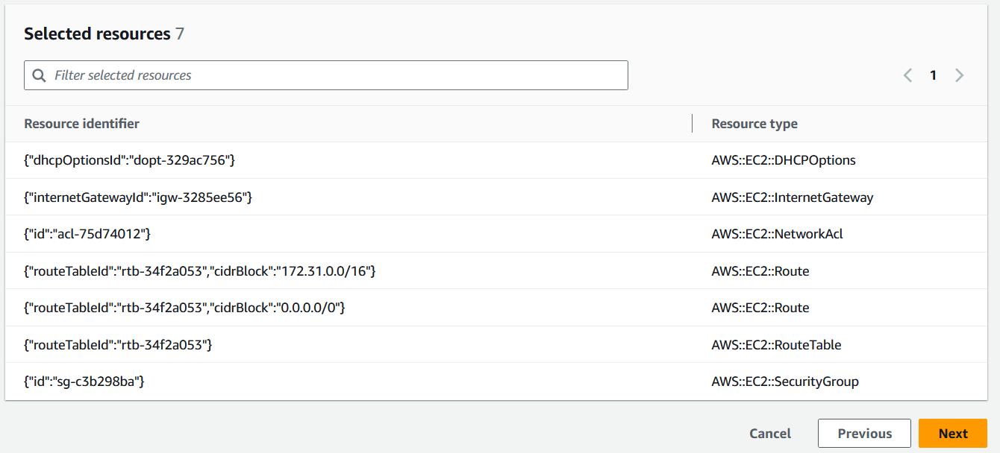

既存のリソースのテンプレートを生成
AWS CloudFormationIaC ジェネレーター (Infrastructure as Code ジェネレーター) を使用すると、まだ CloudFormation で管理されていないアカウントにプロビジョニングされた AWS リソースを使って、テンプレートを生成することができます。リソースを CloudFormation にインポートしたり、新しいアカウントかリージョンにリソースをレプリケートしたりするときは、このテンプレートを使用します。
IaC の生成プロセスは以下のステップで構成されています。
-
アカウントのスキャンを開始します。
-
テンプレートを、一から作成するか、既存スタックのテンプレートを使用して作成します。
-
スキャンしたリソースと関連リソースをリソースの追加ウィザードを使用して、テンプレートに追加します。
-
CloudFormation で管理されるリソースをスタックとしてインポートするか、AWS CDK アプリケーションに移行します。
IaC ジェネレーターの機能は、すべての商用リージョンで利用可能で、多くの一般的な AWS リソースタイプをサポートしています。詳細なリストについては、「リソースタイプのサポート」を参照してください
トピック
考慮事項
ユーザーは、読み取りアクセス許可を持つリソースに対して、CloudFormation レジストリに発行される AWS リソースの JSON または YAML テンプレートを生成できます。IaC ジェネレーターの機能のテンプレートは、リソースプロパティをプロパティごとに記述することなく、クラウドリソースを確実かつ迅速にモデル化します。
次の表は、IaC の生成機能に使用できるクォータの一覧です。
| 名前 | Value |
|---|---|
|
1 回のアカウントスキャンで処理できるリソースの最大数 |
100000 |
|
1 日あたりのスキャン数 (リソースが 10,000 未満のアカウントの場合) |
3 |
|
1 日あたりのスキャン数 (リソースが 10,000 以上のアカウントの場合) |
1 |
|
アカウントあたりの同時に生成されるテンプレートの数 |
5 |
|
1 回のテンプレート生成で同時にモデル化されるリソースの数 |
5 |
|
1 つのテンプレートでモデル化できるリソースの合計数 |
500 |
重要
IaC ジェネレーターは、お使いのリージョンの Cloud Control API でサポートされているリソースのみをサポートします。詳細については、「Cloud Control API ユーザーガイド」の「リソースタイプが Cloud Control API をサポートしているかどうかの判断」を参照してください。
テンプレートの生成 (コンソール)
このセクションでは、IaC ジェネレーター機能を使用して、テンプレートの作成、テンプレートへのリソースの追加、テンプレートからスタックへのリソースのインポートを行う方法を説明します。
IaC ジェネレーターを使用して新しいテンプレートを開くには
AWS Management Console にサインインし、AWS CloudFormation コンソール (https://console.aws.amazon.com/cloudformation
) を開きます。 -
ナビゲーションペインで、[IaC ジェネレーター] をクリックします。

-
[スキャン] パネルで、[新しいスキャンを開始] をクリックします。スキャンすることで、お使いのアカウントでプロビジョニングされたリソースとリソース間の関係が検出されます。リージョンのアカウントにあるリソースの数が多ければ多いほど、スキャンに要する時間が長くなります。

-
[テンプレート] パネルから [テンプレートを作成] をクリックします。
![IaC ジェネレーターの [テンプレートの詳細を指定] ページ](images/IaC-generator-specify-template-details.png)
-
[新しいテンプレートから開始] を選択します。
-
[テンプレート名] パネルに、生成されたテンプレートの名前を入力します。
-
(オプション) [削除ポリシー] を [置換ポリシーを更新] に設定します。
-
[次へ] をクリックし、スキャンしたリソースをテンプレートに追加します。
-
スキャンしたリソースをテンプレートに追加するには
-
スキャンしたリソースのリストで、スキャンしたリソースのリストを参照します。リソースは、リソース識別子、リソースタイプ、タグのいずれかでフィルターできます。フィルターは相互に包括的です。
![IaC ジェネレーターの [スキャンしたリソースを追加] パネル](images/IaC-generator-add-scanned-resources.png)
-
追加するリソースを選択します。
上記 1 と 2 のステップを、必要なリソースがすべてテンプレートに追加されるまで繰り返します。
 -
[次へ] をクリックし、[スキャンしたリソースを追加] ページを閉じて [関連リソースを追加] ページに進みます。
-
関連リソースの推奨リストを確認します。Amazon EC2 インスタンスやセキュリティグループなどの関連リソースは、相互に依存しており、通常は同じワークロードに属しています。生成されたテンプレートに含める関連リソースを選択します。
注記
このテンプレートには、関連リソースをすべて追加することが推奨されます。
![IaC ジェネレーターの [関連リソースを追加]](images/IaC-generator-add-related-resources.png)
-
テンプレートの詳細、スキャンしたリソース、関連リソースを確認します。変更があれば [編集] をクリックします。
-
[テンプレートを作成] をクリックし、[確認して作成] ページを閉じてテンプレートを作成します。
![IaC ジェネレーターの [確認して作成] テンプレート](images/IaC-generator-review-and-create.png)
結果: CloudFormation テンプレートの作成を開始し、スキャンしたリソースと関連リソースを追加しました。
CloudFormation で管理されるリソースをスタックとしてインポートするには
-
[スタックにインポート] をクリックし、[次へ] をクリックします。
-
スタックの名前を、[スタックの詳細を指定] ページの [スタックを指定] パネルに入力します。[Next] を選択します。
-
スタックのパラメータを確認して入力します。[Next] を選択します。
-
[変更を確認] ページでオプションを確認し、[次へ] をクリックします。
-
[確認してインポート] ページで詳細を確認し、[リソースをインポート] をクリックします。
結果： IaC ジェネレーターを使用してテンプレートに追加したすべてのリソースが、CloudFormation スタックにインポートされます。
テンプレートを生成 (AWS CLI)
このセクションでは、AWS CLI を使用して、リソースのスキャン、テンプレートの作成、テンプレートへのリソースの追加とその更新、テンプレートの削除を行う方法について説明します。
アカウント内のリソースをスキャンするには
-
選択したリージョンのアカウントにあるリソースをスキャンするには、start-resource-scan オペレーションを実行します。
$aws cloudformation start-resource-scanこのコマンドは以下を返します。
{ "ResourceScanId": \ "arn:aws:cloudformation:us-east-1:123456789012:resourceScan/0a699f15-489c-43ca-a3ef-3e6ecfa5da60" }
アカウントリソーススキャンを記述するには
-
アカウント内のリソースのスキャンを記述するには、describe-resource-scan オペレーションを実行します。
$aws cloudformation describe-resource-scan \ --resource-scan-id \ "arn:aws:cloudformation:us-east-1:123456789012:resourceScan/0a699f15-489c-43ca-a3ef-3e6ecfa5da60"このコマンドは以下を返します。
{ "ResourceScanId" : \ "arn:aws:cloudformation:us-east-1:123456789012:resourceScan/0a699f15-489c-43ca-a3ef-3e6ecfa5da60", "Status": "complete", "StartTime": "2023-08-21T03:10:38.485000+00:00", "EndTime": "2023-08-21T03:20:28.485000+00:00", "PercentageCompleted": 100.0, "ResourceTypes": [ "AWS::EKS::Cluster", "AWS::S3::Bucket" ], }
スキャンで検出されたリソースのすべてを一覧表示するには
-
スキャンで検出されたリソースを一覧表示するには、list-resource-scan-resources オペレーションを実行します。レスポンスには、CloudFormation がそのリソースをすでに管理しているか否かを示す列が含まれます。
$aws cloudformation list-resource-scan-resources \ --resource-scan-id \ "arn:aws:cloudformation:us-east-1:123456789012:resourceScan/0a699f15-489c-43ca-a3ef-3e6ecfa5da60" \ --resource-identifier exampleResourceこのコマンドは以下を返します。
{ "Resources": [ { "ResourceType": "AWS::EKS::Cluster", "ResourceIdentifier": { "ClusterName": "exampleResourceCluster" } }, "ManagedByStack": false { "ResourceType": "AWS::S3::Bucket", "ResourceIdentifier": { "BucketName": "exampleResourceBucket" }, "ManagedByStack": false } ] }この例では、
list-resource-scan-resourcesの出力がresources.jsonという JSON ファイルに保存されます。
スキャンしたリソースに関連するリソースをすべて一覧表示するには
-
スキャンしたリソースに関連するリソースを一覧表示するには、スキャンしたリソース (最大 100) を含むバッチを作成し、バッチごとに list-resource-scan-related-resources オペレーションを実行します。一覧に、重複したリソースが出力される場合があるため注意が必要です。
レスポンスには、CloudFormation がそのリソースを既に管理しているかどうかを示す列が含まれます。テンプレートには、関連するすべてのリソースを追加することをお勧めします。
$aws cloudformation list-resource-scan-related-resources \ --resource-scan-id \ "arn:aws:cloudformation:us-east-1:123456789012:resourceScan/0a699f15-489c-43ca-a3ef-3e6ecfa5da60" \ --resources file://resources.jsonこのコマンドは以下を返します。
{ "RelatedResources": [ { "ResourceType": "AWS::EKS::Nodegroup", "ResourceIdentifier": { "NodegroupName": "exampleNodegroup" }, "ManagedByStack": false }, { "ResourceType": "AWS::IAM::Role", "ResourceIdentifier": { "RoleId": "arn:aws::iam::123456789012:role/S3Access" }, "ManagedByStack": false } ] }注記
リソースの入力リストの長さは 100 を超えることはできません。100 を超えるリソースの関連リソースを一覧表示するには、100 のバッチで オペレーションを実行した後、結果を統合します。
list-resource-scan-related-resourcesの出力がresources.jsonという JSON ファイルにも追加されるとします。
テンプレートを生成するには
-
リソースなしで新しいテンプレートを生成するには、create-generated-template オペレーションを実行し、テンプレート名を指定します。
$aws cloudformation create-generated-template \ --generated-template-nameTemplateNamecreate-generated-templateコマンドにより以下が返されます。{ "Arn": \ "arn:aws:cloudformation:us-east-1:123456789012:generatedtemplate/7fc8512c-d8cb-4e02-b266-d39c48344e48", "Name": "TemplateName" }
生成されたテンプレートをリソースを使って更新するには
-
新たに作成したテンプレートを更新するには、追加するリソースのリストを指定します。この例では、ファイル
resources.jsonを使用します。以下は、resources.jsonの JSON テキストファイルです。[ { "ResourceType": "AWS::EKS::Cluster", "LogicalResourceId":"Cluster", "ResourceIdentifier": { "ClusterName": "exampleResourceCluster" } }, { "ResourceType": "AWS::S3::Bucket", "LogicalResourceId":"Bucket", "ResourceIdentifier": { "BucketName": "exampleResourceBucket" } }, { "ResourceType": "AWS::EKS::Nodegroup", "LogicalResourceId":"Nodegroup", "ResourceIdentifier": { "NodegroupName": "exampleNodegroup" } }, { "ResourceType": "AWS::IAM::Role", "LogicalResourceId":"Role", "ResourceIdentifier": { "RoleId": "arn:aws::iam::123456789012:role/S3Access" } } ]テンプレートを更新するには、update-generated-template オペレーションを実行し、スタック名を指定し、テキストファイルを指定してリソースをテンプレートに追加します。
--cloud-formation-template-configurationオプションは含まれていないため、UpdateReplacePolicyとDeletionPolicyのポリシーはデフォルトでRetainに設定されています。$aws cloudformation update-generated-template \ --generated-template-nameTemplateName\ --add-resources file://resources.jsonupdate-generated-templateコマンドにより以下が返されます。{ "Arn": "arn:aws:cloudformation:us-east-1:123456789012:template/equipment-sorter", "Name": "TemplateName" }
指定されたテンプレートをスタック名で削除するには
-
生成されたテンプレートを削除するには、delete-generated-template オペレーションを実行し、テンプレート生成名またはテンプレート生成 ARN を指定します。
$aws cloudformation delete-generated-template \ --generated-template-nameTemplateName
AWS CDK でテンプレートを生成、管理する
AWS Cloud Development Kit (AWS CDK) は、一般的なプログラミング言語を使って AWS CloudFormation リソースを開発、管理、デプロイするときに使用できるオープンソースのソフトウェア開発フレームワークです。
AWS CDK CLI は、IaC ジェネレーターとの統合を提供します。AWS CloudFormation テンプレートを生成し、ユーザーのリソースを含む新しい CDK アプリを作成するには、AWS CDK CLI cdk migrate コマンドを使用します。その後、AWS CDK を使用してリソースを管理し、AWS CloudFormation にデプロイします。
詳細については、「AWS Cloud Development Kit (AWS CDK) デベロッパーガイド」の「Migrate to AWS CDK」を参照してください。